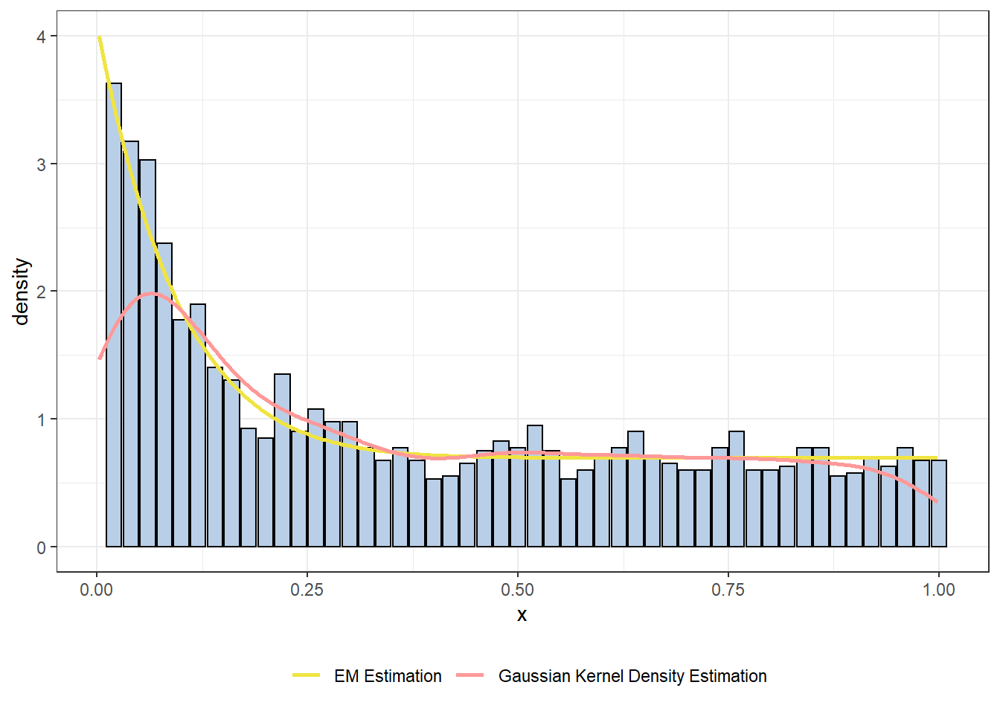

Expectation maximization (EM) algorithm is one of the most widely used algorithm in statistics. My first encounter with EM algorithm was in STAT8003 (Statistical Methods I) in Fall 2015 Temple University. Prof Zhao ,who taught this class, did a very good job explaining EM algorithm and shared all class notes with students. However, it still took me a week to fully understand EM algorithm. In this webpage, I show an example of EM algorithm, from homework of STAT8003, in details. I hope both my wife and I will benefit from this in our future studies.
Assume that the data \(x_1,\dots,x_n\) follows the following distribution:
\[\begin{equation} x_i \sim f(x_i) = \pi_0 f_0(x_i) + \pi_1 f_1(x_i) \tag{1.1} \end{equation}\]
where
\(f_0(x_i) = 1(0 \le x_i \le 1)\), which is the density function of uniform distribution
\(f_1(x_i)=\beta(1-x_i)^{\beta-1}\), which is density function of Beta\((1,\beta)\)
\(z_i\), which is not shown in (1.1), is group information and should be treated as a missing value.
Define parameters that we are looking to solve to be
\[\begin{equation} \boldsymbol{\theta} = (\pi_0, \beta) \tag{1.2} \end{equation}\]
One important relationship between \(\pi_0\) and \(\pi_1\)
\[\begin{equation} \pi_0 = 1 - \pi_1 \tag{1.3} \end{equation}\]
Note that
\[\begin{equation} \begin{split} f(x_i,z_i ; \boldsymbol{\theta}) &= \mathbf{I}(z_i = 0 ; \boldsymbol{\theta}) \pi_0 f_0(x_i) + \mathbf{I}(z_i = 1 ; \boldsymbol{\theta}) \pi_1 f_0(x_i) \\ &= \sum_{j=0}^{1} \mathbf{I}(z_i = j ; \boldsymbol{\theta}) \pi_j f_j(x_i) \end{split} \tag{1.4} \end{equation}\]
where \(\mathbf{I}(z_i = j)\) is indicator function. Indicator function has following important property.
\[\begin{equation} E(\mathbf{I}(z_i = j)) = P(z_i = j) \tag{1.5} \end{equation}\]
From (1.4), we can derive the likelihood function
\[\begin{equation} L(\boldsymbol{\theta};(x_1,\dots,x_n),(z_1,\dots,z_n)) = L(\boldsymbol{\theta};\mathbf{x},\mathbf{z}) = \prod_{i=1}^{n} \sum_{j=0}^{1} \mathbf{I}(z_i = j ; \boldsymbol{\theta}) \pi_j f_j(x_i) \tag{1.6} \end{equation}\]
and the log-likelihood is
\[\begin{equation} \begin{split} \ell(\boldsymbol{\theta};\mathbf{x},\mathbf{z}) &= log(\prod_{i=1}^{n} \sum_{j=0}^{1} \mathbf{I}(z_i = j ; \boldsymbol{\theta}) \pi_j f_j(x_i)) \\ &= \sum_{i=1}^{n} log(\sum_{j=0}^{1} \mathbf{I}(z_i = j ; \boldsymbol{\theta}) \pi_j f_j(x_i)) \\ &= \sum_{i=1}^{n} \sum_{j=0}^{1} log(\mathbf{I}(z_i = j ; \boldsymbol{\theta}) \pi_j f_j(x_i)) \end{split} \tag{1.7} \end{equation}\]
Given the \(t\)-th iteration of parameter \(\boldsymbol{\theta}^{(t)}\), define
\[\begin{equation} \begin{split} T^{(t)}_{j,i} &= P(Z_i = j| \mathbf{x}; \boldsymbol{\theta}^{(t)})\\ &= \frac{\pi_j^{(t)} f_j (x_i)}{\pi_0^{(t)} f_0 (x_i) + \pi_1^{(t)} f_1 (x_i) } \end{split} \tag{1.8} \end{equation}\]
The E step: derive expectation of log-likelihood. We define
\[\begin{equation} \begin{split} Q(\boldsymbol{\theta} | \boldsymbol{\theta}^{(t)}) &= E_{\mathbf{z};\mathbf{x},\boldsymbol{\theta}^{(t)}}(\ell(\boldsymbol{\theta};\mathbf{x},\mathbf{z}))\\ &\stackrel{(1.7)}{=} E_{\mathbf{z};\mathbf{x},\boldsymbol{\theta}^{(t)}}( \sum_{i=1}^{n} \sum_{j=0}^{1} log(\mathbf{I}(z_i = j ;\mathbf{x}, \boldsymbol{\theta}) \pi_j f_j(x_i)) )\\ &= \sum_{i=1}^{n} \sum_{j=0}^{1} E_{\mathbf{z};\mathbf{x},\boldsymbol{\theta}^{(t)}}( log(\mathbf{I}(z_i = j ;\mathbf{x}, \boldsymbol{\theta}) \pi_j f_j(x_i)) )\\ &= \sum_{i=1}^{n} \sum_{j=0}^{1} E_{\mathbf{z};\mathbf{x},\boldsymbol{\theta}^{(t)}}(\mathbf{I}(z_i = j ;\mathbf{x}, \boldsymbol{\theta}) log( \pi_j f_j(x_i) ))\\ &= \sum_{i=1}^{n} \sum_{j=0}^{1} E_{\mathbf{z};\mathbf{x},\boldsymbol{\theta}^{(t)}}( \mathbf{I}(z_i = j ;\mathbf{x}, \boldsymbol{\theta}^{(t)}) ) log(\pi_j f_j(x_i))\\ &\stackrel{(1.5)}{=} \sum_{i=1}^{n} \sum_{j=0}^{1} P(z_i = j ; \mathbf{x}, \boldsymbol{\theta}^{(t)}) log(\pi_j f_j(x_i))\\ &= \sum_{i=1}^{n} \sum_{j=0}^{1} P(z_i = j | \mathbf{x}; \boldsymbol{\theta}^{(t)}) log(\pi_j f_j(x_i))\\ &= \sum_{i=1}^{n} P(z_i = 0 | \mathbf{x}; \boldsymbol{\theta}^{(t)}) log(\pi_0 f_0(x_i)) + P(z_i = 1 | \mathbf{x}; \boldsymbol{\theta}^{(t)}) log(\pi_1 f_1(x_i))\\ &\stackrel{(1.8)}{=} \sum_{i=1}^{n} T^{(t)}_{0,i} log(\pi_0 f_0(x_i)) + T^{(t)}_{1,i} log(\pi_1 f_1(x_i))\\ &= \sum_{i=1}^{n} T^{(t)}_{0,i} log(\pi_0 \times 1) + T^{(t)}_{1,i} log(\pi_1 \times \beta(1-x_i)^{\beta-1})\\ &= \sum_{i=1}^{n} T^{(t)}_{0,i} log(\pi_0) + T^{(t)}_{1,i} (log(\pi_1 ) + log(\beta) + (\beta-1)log(1-x_i)) \end{split} \tag{1.9} \end{equation}\]
The M step: maximize \(Q(\boldsymbol{\theta} | \boldsymbol{\theta}^{(t)})\)
From calculus, we know that first derivatives must be 0. (Note: \(T^{(t)}_{j,i}\) should be treated as constant)
\[\begin{equation} \frac{\partial Q(\boldsymbol{\theta} | \boldsymbol{\theta}^{(t)})}{\partial \pi_0} = \sum_{i=1}^{n} T^{(t)}_{0,i} \frac{1}{\pi_0} + \sum_{i=1}^{n} T^{(t)}_{1,i} \frac{1}{\pi_0 - 1} = 0 \tag{1.10} \end{equation}\]
This implies
\[\begin{equation} \pi_0^{(t+1)} = \frac{\sum_{i=1}^{n} T^{(t)}_{0,i}}{\sum_{i=1}^{n} T^{(t)}_{0,i} + \sum_{i=1}^{n} T^{(t)}_{1,i}} = \frac{\sum_{i=1}^{n} T^{(t)}_{0,i}}{\sum_{i=1}^{n} ( T^{(t)}_{0,i} + T^{(t)}_{1,i})} = \frac{\sum_{i=1}^{n} T^{(t)}_{0,i}}{n} \tag{1.11} \end{equation}\]
Similarly, we have that
\[\begin{equation} \frac{\partial Q(\boldsymbol{\theta} | \boldsymbol{\theta}^{(t)})}{\partial \beta} = \sum_{i=1}^{n} T^{(t)}_{1,i} (\frac{1}{\beta} + log(1-x_i)) = 0 \tag{1.12} \end{equation}\]
This implies
\[\begin{equation} \beta^{(t+1)} = \frac{\sum_{i=1}^{n} T^{(t)}_{1,i}}{-\sum_{i=1}^{n} T^{(t)}_{1,i} log(1-x_i)} \tag{1.13} \end{equation}\]
Here is what I learn from this long calculation. For EM algorithm, we can follow those steps.
RCreate a loop in R to get \(\pi_0\) and \(\beta\).
With initial value of \(0.69\) and \(11\), at 32th iteration, \(\pi_0 = 0.69679\) and \(\beta = 11.09328\). (Initial value are chosen on purpose so it doesn’t require too many iterations until converge).
pvalue <- read.csv("files/pvalue.csv")
em <- function(X,s) {
T0.all <- s[1]/ (s[1]+(1-s[1])*s[2]*(1-X)^(s[2]-1))
s[1] <- mean(T0.all)
s[2] <- -sum(1-T0.all)/sum((1-T0.all)*(log(1-X)))
return(s)
}
s.old <- c(0.69, 11)
s.new <- s.old
delta <- 0.0001
Delta <- 1
ITR <- 1
while( Delta > delta ){
s.new <- em(X = pvalue$X, s.old)
Delta <- sum( (s.new-s.old)^2 )
Delta <- max( abs(s.new-s.old) )
ITR <- ITR+1
s.old <- s.new
print( paste(ITR, "-th iteration: pi0=", s.new[1], ", beta=", s.new[2] ) )
}## [1] "2 -th iteration: pi0= 0.692953136521137 , beta= 10.9669224885903"
## [1] "3 -th iteration: pi0= 0.694245784180573 , beta= 10.9727031763405"
## [1] "4 -th iteration: pi0= 0.69491869223006 , beta= 10.988768636732"
## [1] "5 -th iteration: pi0= 0.695335476190631 , beta= 11.0058596812566"
## [1] "6 -th iteration: pi0= 0.695629559921737 , beta= 11.0212140150885"
## [1] "7 -th iteration: pi0= 0.695853527007361 , beta= 11.0342459020068"
## [1] "8 -th iteration: pi0= 0.696030723377971 , beta= 11.0450623202825"
## [1] "9 -th iteration: pi0= 0.696173386989525 , beta= 11.0539564879985"
## [1] "10 -th iteration: pi0= 0.696289132284208 , beta= 11.0612405367788"
## [1] "11 -th iteration: pi0= 0.69638334812323 , beta= 11.0671951901675"
## [1] "12 -th iteration: pi0= 0.696460145936134 , beta= 11.0720589742552"
## [1] "13 -th iteration: pi0= 0.696522781969357 , beta= 11.0760300668865"
## [1] "14 -th iteration: pi0= 0.696573879508717 , beta= 11.0792715728663"
## [1] "15 -th iteration: pi0= 0.69661556770814 , beta= 11.0819171723944"
## [1] "16 -th iteration: pi0= 0.696649580151097 , beta= 11.0840762181639"
## [1] "17 -th iteration: pi0= 0.696677330204864 , beta= 11.0858380773616"
## [1] "18 -th iteration: pi0= 0.696699970779702 , beta= 11.0872757467545"
## [1] "19 -th iteration: pi0= 0.696718442513196 , beta= 11.0884488331594"
## [1] "20 -th iteration: pi0= 0.696733512901597 , beta= 11.0894059997384"
## [1] "21 -th iteration: pi0= 0.696745808174843 , beta= 11.0901869694761"
## [1] "22 -th iteration: pi0= 0.696755839292428 , beta= 11.0908241640833"
## [1] "23 -th iteration: pi0= 0.696764023154213 , beta= 11.0913440437445"
## [1] "24 -th iteration: pi0= 0.696770699909498 , beta= 11.0917682018197"
## [1] "25 -th iteration: pi0= 0.696776147082404 , beta= 11.092114259032"
## [1] "26 -th iteration: pi0= 0.696780591098877 , beta= 11.0923965936944"
## [1] "27 -th iteration: pi0= 0.696784216692932 , beta= 11.0926269379243"
## [1] "28 -th iteration: pi0= 0.696787174582047 , beta= 11.0928148643702"
## [1] "29 -th iteration: pi0= 0.696789587729988 , beta= 11.0929681835058"
## [1] "30 -th iteration: pi0= 0.69679155645687 , beta= 11.0930932678943"
## [1] "31 -th iteration: pi0= 0.69679316260856 , beta= 11.0931953168253"
## [1] "32 -th iteration: pi0= 0.696794472958494 , beta= 11.0932785722746"library(ggplot2)
pi0 <- s.new[1]
pi1 <- 1-pi0
beta <- s.new[2]
hist.plot <- hist(pvalue$X, br=40, plot = FALSE)
df.plot <- data.frame(x = hist.plot$breaks[-1], y = hist.plot$density)
list.density <- density(pvalue$X)
df.plot2 <- data.frame(x = list.density$x, y = list.density$y)
df.plot2 <- subset(df.plot2, x >=0 & x <=1)
df.plot2["color"] <- "Gaussian Kernel Density Estimation"
df.plot3 <- data.frame(x = df.plot2$x)
df.plot3["y"] <- (pi0*1+ pi1*beta*(1-df.plot3$x)^(beta-1))
df.plot3["color"] <- "EM Estimation"
df.line <- rbind(df.plot2,df.plot3)
rm(df.plot2,df.plot3)
ggplot(data = df.plot, aes(x = x, y = y)) +
geom_col(fill = "#B9CFE7", colour = "black") +
geom_line(data = df.line ,aes(x = x, y = y, color = color),size = 1) +
scale_y_continuous("density") +
theme_bw() +
scale_color_manual(values = c("#F0E442","#FF9999"), name = element_blank()) +
theme(legend.position = "bottom")
From the histogram, we can easily see that EM density estimation fits the real density very well. Not surprise to us, EM density estimation is a better choice comparing with Gaussian kernel density estimation for this data set.
We can classify \(x_i\) to be 1st group if \(T_{0,i}=P(z_i=0|\mathbf{x};\boldsymbol{\theta}^{(\text{32th iteration})}) \stackrel{(1.8)}{=} \frac{0.69679 \times 1}{0.69679 \times 1 + (1-0.69679) \times 11.09327(1-x_i)^{(11.09327 -1)}} > 0.5\).
Use R to calculate
pvalue["p0"] <- s.new[1]/(s.new[1] + (1-s.new[1]) * s.new[2] * (1-pvalue$X)^(s.new[2] - 1))
pvalue[pvalue$p0 >= 0.5, "estimated_group"] <- as.integer(0)
pvalue[pvalue$p0 < 0.5, "estimated_group"] <- as.integer(1)
pvalue[pvalue$group == pvalue$estimated_group,"Diff"] <- "Right classified"
pvalue[pvalue$group != pvalue$estimated_group,"Diff"] <- "False classified"
table(pvalue$Diff)##
## False classified Right classified
## 321 1679The total number of flase classified is \(321\). The false classified rate is \(321/(321+1679) = 0.1605\).